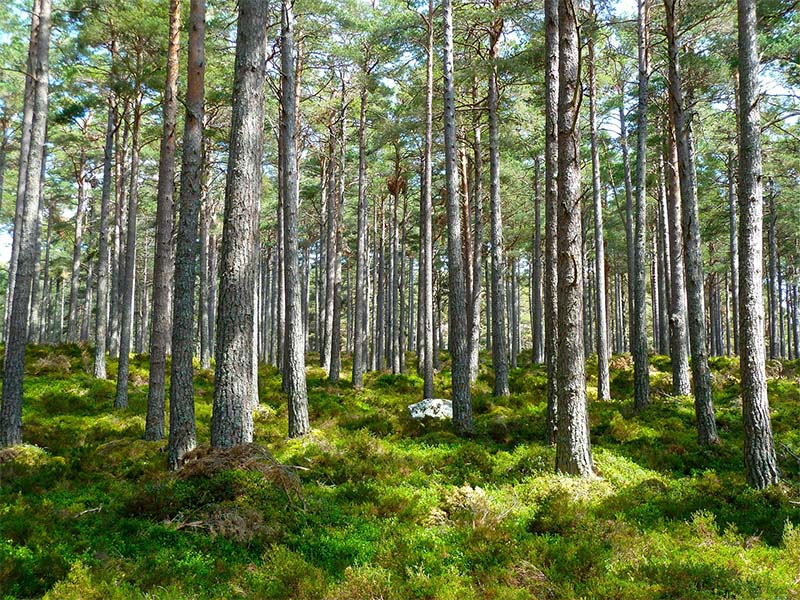

La ecología es la rama de la biología que estudia las relaciones de los diferentes seres vivos entre sí y con su entorno: «la biología de los ecosistemas» (Margalef, 1998, p. 2). Estudia cómo estas interacciones entre los organismos y su ambiente afectan a propiedades como la distribución o la abundancia. En el ambiente se incluyen las propiedades físicas y químicas que pueden ser descritas como la suma de factores abióticos locales, como el clima y la geología, y los demás organismos que comparten ese hábitat (factores bióticos). Los ecosistemas están compuestos de partes que interactúan dinámicamente entre ellas junto con los organismos, las comunidades que integran, y también los componentes no vivos de su entorno. Los procesos del ecosistema, como la producción primaria, la pedogénesis, el ciclo de nutrientes, y las diversas actividades de construcción del hábitat, regulan el flujo de energía y materia a través de un entorno. Estos procesos se sustentan en los organismos con rasgos específicos históricos de la vida, y la variedad de organismos que se denominan biodiversidad. La visión integradora de la ecología plantea el estudio científico de los procesos que influyen en la distribución y abundancia de los organismos, así como las interacciones entre los organismos y la transformación de los flujos de energía. La ecología es un campo interdisciplinario que incluye a la biología y las ciencias de la Tierra.
Los antiguos filósofos griegos, como Hipócrates y Aristóteles, sentaron las bases de la ecología en sus estudios sobre la historia natural. Los conceptos evolutivos sobre la adaptación y la selección natural se convirtieron en piedras angulares de la teoría ecológica moderna transformándola en una ciencia más rigurosa en el siglo XIX. Está estrechamente relacionada con la biología evolutiva, la genética y la etología. La comprensión de cómo la biodiversidad afecta a la función ecológica es un área importante enfocada en los estudios ecológicos. Los ecólogos tratan de explicar:
Los procesos de la vida, interacciones y adaptaciones El movimiento de materiales y energía a través de las comunidades vivas El desarrollo sucesional de los ecosistemas La abundancia y la distribución de los organismos y de la biodiversidad en el contexto del medio ambiente. Hay muchas aplicaciones prácticas de la ecología en biología de la conservación, manejo de los humedales, manejo de recursos naturales (la agroecología, la agricultura, la silvicultura, la agroforestería, la pesca), la planificación de la ciudad (ecología urbana), la salud comunitaria, la economía, la ciencia básica aplicada, y la interacción social humana (ecología humana). Los organismos (incluidos los seres humanos) y los recursos componen los ecosistemas que, a su vez, mantienen los mecanismos de retroalimentación biofísicos son componentes del planeta que moderan los procesos que actúan sobre la vida (bióticos) y no vivos (abióticos). Los ecosistemas sostienen funciones que sustentan la vida y producen el capital natural como la producción de biomasa (alimentos, combustibles, fibras y medicamentos), los ciclos biogeoquímicos globales, filtración de agua, la formación del suelo, control de la erosión, la protección contra inundaciones y muchos otros elementos naturales de interés científico, histórico o económico.
La ecología es la rama de la Biología que estudia las interacciones de los seres vivos con su hábitat. Esto incluye factores abióticos, esto es, condiciones ambientales tales como: climatológicas, edáficas, etc.; pero también incluye factores bióticos, esto es, condiciones derivadas de las relaciones que se establecen con otros seres vivos. Mientras que otras ramas se ocupan de niveles de organización inferiores (desde la bioquímica y la biología molecular pasando por la biología celular, la histología y la fisiología hasta la sistemática), la ecología se ocupa del nivel superior a estas, ocupándose de las poblaciones, las comunidades, los ecosistemas y la biosfera. Por esta razón, y por ocuparse de las interacciones entre los individuos y su ambiente, la ecología es una ciencia multidisciplinaria que utiliza herramientas de otras ramas de la ciencia, especialmente geología, meteorología, geografía, sociología, física, química y matemáticas.
Los trabajos de investigación en esta disciplina se diferencian con respecto de la mayoría de los trabajos en las demás ramas de la Biología por su mayor uso de herramientas matemáticas, como la estadística y los modelos matemáticos. Además, la comprensión de los procesos ecológicos se basa fuertemente en los postulados evolutivos (Dobzhansky, 1973).
{kind=link}